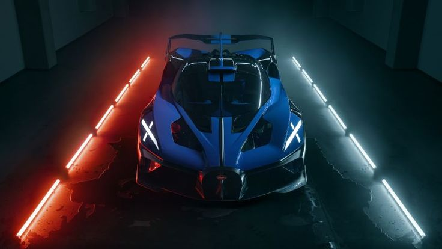

The Bugatti Bolide is a track-focused hypercar concept turned reality, designed to push the limits of aerodynamics, lightweight engineering, and extreme performance. It’s essentially the raw essence of Bugatti performance without the constraints of road regulations.
• 8.0-liter quad-turbocharged W16 engine tuned to produce up to 1,850 hp on 110-octane racing fuel (1,600 hp on 98-octane).
• 7-speed dual-clutch gearbox optimized for track performance.
• All-wheel drive system with advanced torque vectoring.
• 0–100 km/h in 2.17 seconds.
• Estimated top speed over 500 km/h.
• 0–500–0 km/h in just 33.62 seconds.
• Ultra-lightweight carbon fiber monocoque chassis with total weight around 1,450 kg.
• Aerodynamic body generating 1,800 kg of downforce at 320 km/h.
• X-shaped LED headlights and taillights for a futuristic signature.
• Minimalist racing cockpit with FIA-approved safety systems.
• Production limited to just 40 units worldwide.
• Price starts at around €4 million.
• Built exclusively for track use—no road homologation.
The Bugatti Bolide is the purest form of Bugatti performance—lightweight, extreme, and unapologetically built for the track. It’s not just a car; it’s a weapon for the racing circuit.
